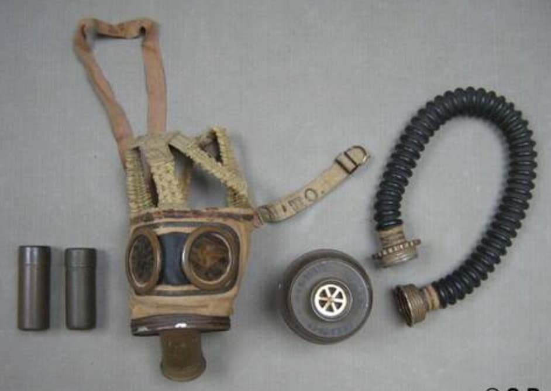
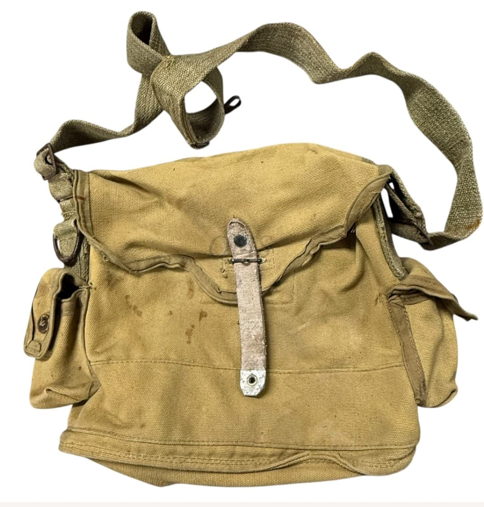
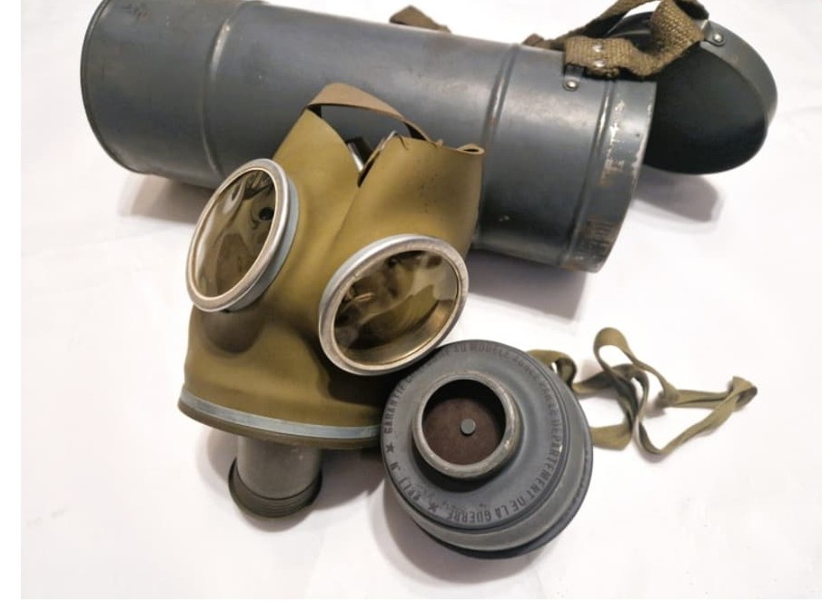
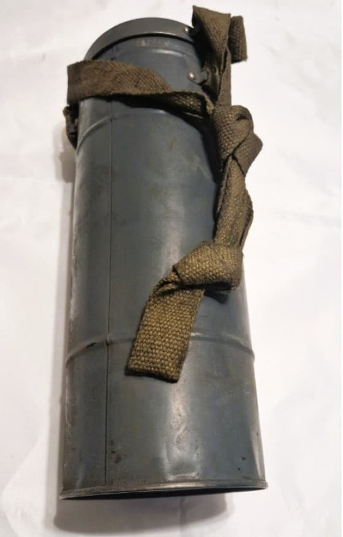

Introduction
Durant la Seconde Guerre mondiale, l’Armée Française utilise plusieurs modèles de masques à gaz militaires : l’ANP 31 (à tuyau), l’ARN 31 et l’ARN 39 (compacts). Voici une présentation muséale de ces équipements, accompagnée de leurs contenants d’époque.
ANP 31 – Masque à tuyau
L’ANP 31 est un appareil à tuyau utilisé durant la mobilisation de 1939–1940. Il se distingue par sa cartouche déportée reliée par un tuyau annelé.

Sac de transport ANP 31
Le masque ANP 31 est transporté dans un sac en toile kaki, conçu pour accueillir le masque, le tuyau et la cartouche déportée.

ARN 31 – Masque compact
Le modèle ARN 31 est un masque compact avec filtre vissé, utilisé dans les années 1930 et durant la campagne de 1940. Il est plus rare que les ARS.

ARN 39 – Modèle simplifié
Le ARN 39 est une évolution simplifiée du ARN 31, produit pour la mobilisation de 1939. Il reste un masque militaire WW2 à part entière.

Boîte métallique WW2
Les masques ARN et ARS sont transportés dans une boîte métallique cylindrique, typique de l’armée française durant la Seconde Guerre mondiale.
